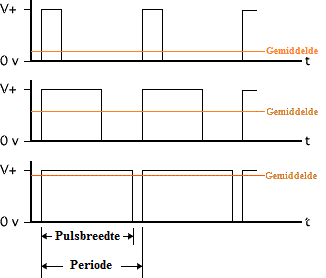
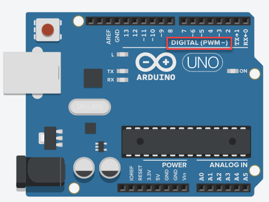

Met analogWrite() kun je een analoge spanning simuleren op bepaalde pinnen van je Arduino. Dit noemen we PWM (Pulse Width Modulation).
PWM werkt door een digitaal signaal heel snel aan en uit te zetten. Dit gebeurt ongeveer 490 keer per seconde (490 Hz) op een Arduino Uno of Leonardo. Door de verhouding tussen "aan tijd" en "uit tijd" te variëren, kun je bijvoorbeeld een LED dimmen of de snelheid van een motor regelen.
Je geeft in de functie analogWrite een waarde mee tussen 0 en 255:
De resolutie (het aantal mogelijke toestanden) is bij analogWrite slechts 256 (en niet 1024 zoals bij analogRead het geval is). Dit komt omdat hier 8 bits worden gebruikt (2^8 = 256) in plaats van 10 bits.

const int pinPotentiometer = A0; // Potentiometer op analoge pin A0
const int pinLed = 3; // LED op PWM pin 3
void setup()
{
pinMode(pinLed, OUTPUT);
}
void loop()
{
// Lees de potentiometer uit (0-1023)
int valuePotentiometer = analogRead(pinPotentiometer);
// Herschaal naar PWM waarde (0-255)
int brightness = valuePotentiometer / 1023.0 * 255;
// Stuur PWM signaal naar LED
analogWrite(pinLed, brightness);
}Niet alle pinnen ondersteunen PWM! Op de Arduino Uno en Leonardo zijn dit alleen de pinnen met een ~ symbool ernaast (pin 3, 5, 6, 9, 10, 11).
